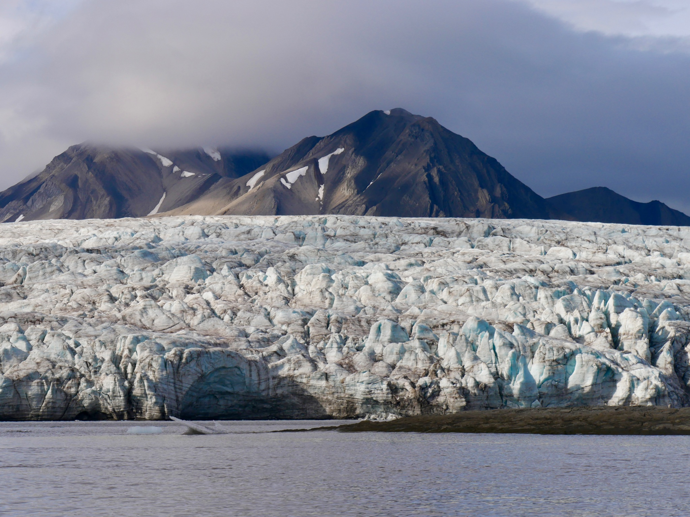
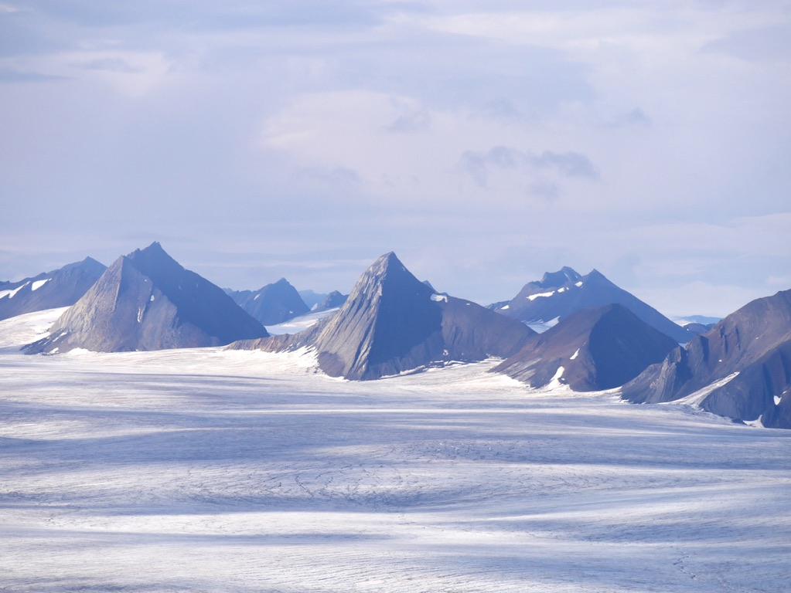
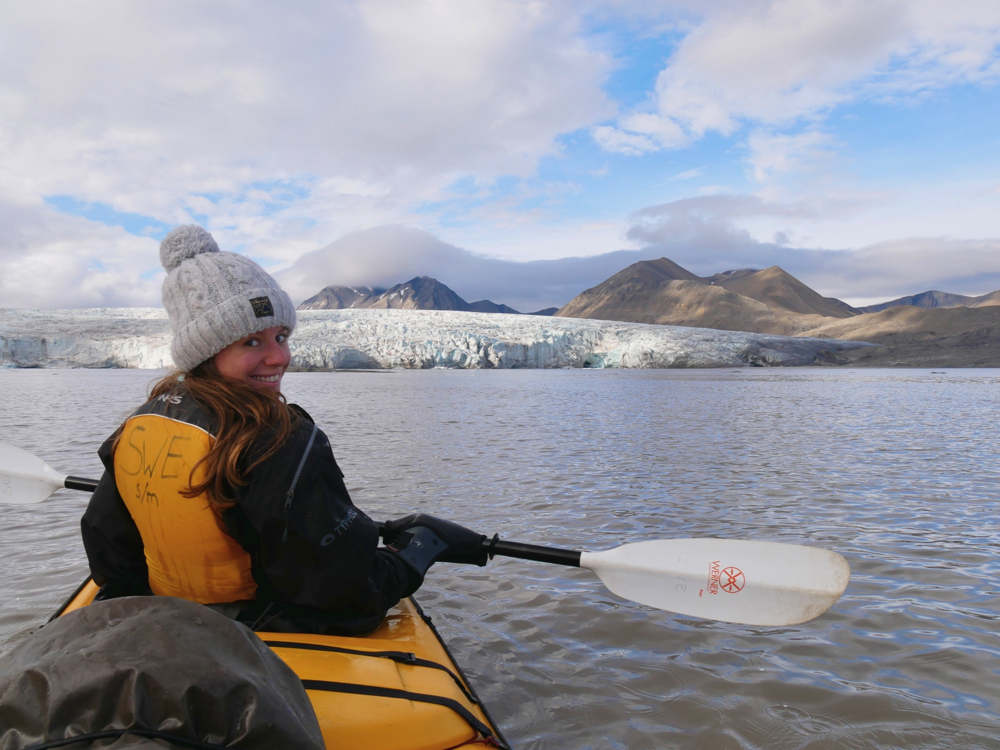
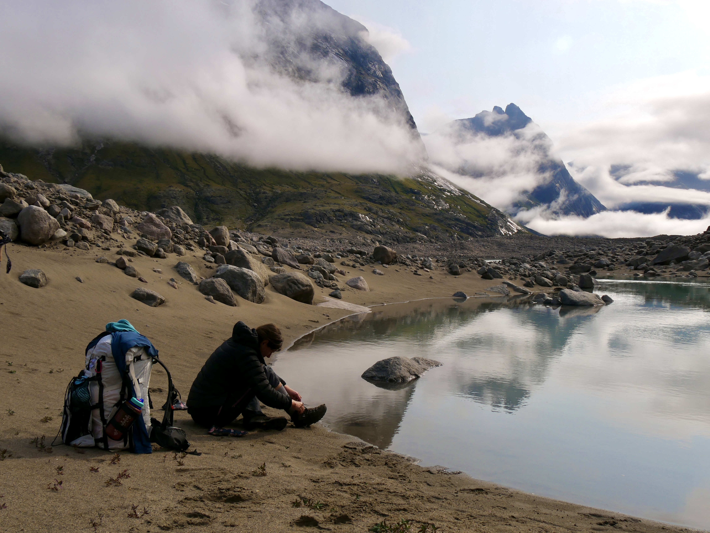
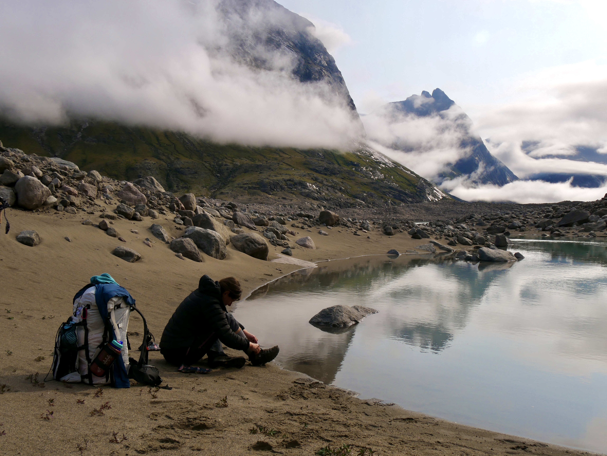
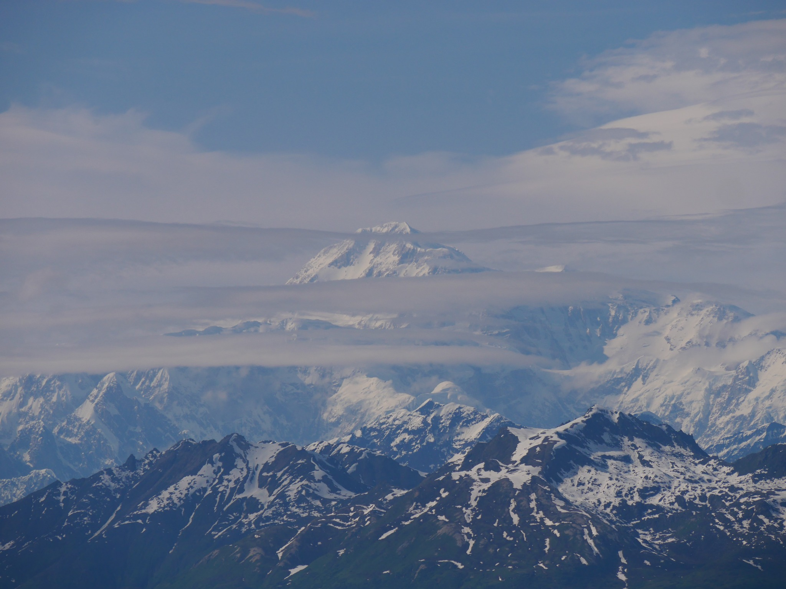
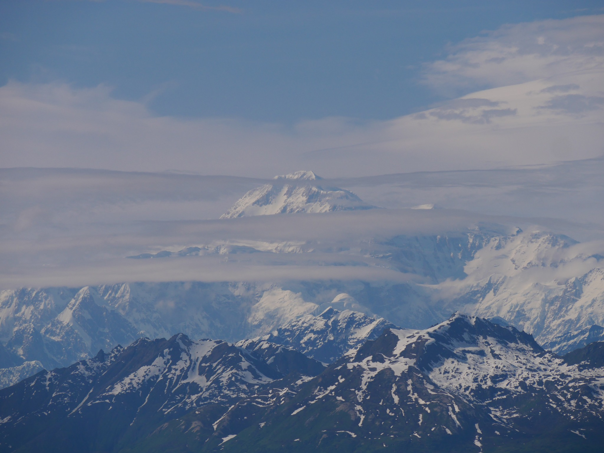

About Me
I’m an ESA Research Fellow at the Space Telescope Science Institute (STScI) in Baltimore, MD, USA, and a member of the SH0ES team. My research focuses on the astronomical distance ladder and the measurement of the Hubble Constant H0 with Cepheid stars.
Research
My research focuses on astronomical distance measurements using Cepheid stars with the goal of a 1% determination of the Hubble constant H0. The current tension between the local measurement of H0 based on Cepheid and Type Ia supernova distances (H0 = 73.17 ± 0.86 km/s/Mpc by the SH0ES team) and its value inferred from the Λ-CDM model calibrated with CMB data in the early universe (H0 = 67.4 ± 0.5 km/s/Mpc) has reached a 5σ significance. This intriguing discrepancy, which has been recently confirmed with JWST observations of Cepheids, provides growing hints of new physics beyond Λ-CDM.
The first rung of the SH0ES distance ladder is the calibration of the Cepheid Period-Luminosity relation (or Leavitt law) with geometric distances. Then, Cepheids are used to solve for the peak SNIa luminosity. Finally, SNIa in the Hubble Flow directly measure the expansion rate of the universe, H0.
I am working on improving the primary calibration of Cepheids in the Local Group, in particular with parallaxes from the Gaia satellite in the Milky Way (Breuval et al. 2020). I am also interested in reducing the systematic uncertainties in Cepheid distances, for example the metallicity dependence (Breuval et al. 2021, 2022). Recently, I used HST to observe Cepheids in the Small Magellanic Cloud (SMC) in order to increase the number of geometric calibrators for the distance ladder and improve the H0 measurement (Breuval et al. 2024). Following a similar method, I measured the most precise distance to the M33 galaxy (Breuval et al. 2023) which should provide an additional anchor when geometric measurements become available. Finally, I also started investigating different methods of distance measurement such as the Tip of the Red Giant Branch (TRGB) and Carbon stars (the J-region Asymptotic Giant Branch, JAGB), which can substitute Cepheids in the distance ladder (HST GO-17520).
Publications
Link to all publications (ADS)
Link to first-author publications (ADS)
Breuval et al. (2025b) - Converging on the Cepheid Metallicity Dependence: Implications of Nonstandard Gaia Parallax Recalibration on Distance Measures
Breuval et al. (2025a) - The Legacy of Henrietta Leavitt: A Re-analysis of the First Cepheid Period–Luminosity Relation
Breuval et al. (2024) - Small Magellanic Cloud Cepheids Observed with the Hubble Space Telescope Provide a New Anchor for the SH0ES Distance Ladder
Breuval et al. (2023) - A 1.3% Distance to M33 from Hubble Space Telescope Cepheid Photometry
Breuval et al. (2022) - An Improved Calibration of the Wavelength Dependence of Metallicity on the Cepheid Leavitt Law
Breuval et al. (2021) - The Influence of Metallicity on the Leavitt Law from Geometrical Distances of Milky Way and Magellanic Cloud Cepheids
Breuval et al. (2020) - The Milky Way Cepheid Leavitt law based on Gaia DR2 parallaxes of companion stars and host open cluster populations
Travels
Besides astronomy, I also like to discover cold, remote, and unexplored places, mostly in the Arctic. So far, I have been to Iceland, Svalbard, Baffin Island (Canada), Chilean Patagonia, Faroe Islands, Alaska, and soon the Lofoten Islands in Norway! :)
Akshayuk Pass, Baffin Island, Nunavut, Canada 🇨🇦
Date: August 2024, Latitude: 67.01° N
Located in the Auyuittuq National Park in northern Canada, across the West coast of Greenland, this hike crosses the south of Baffin Island. It connects the two Inuit communities of Qikiqtarjuaq and Pangnirtung, and crosses the Arctic Circle. The main difficulties of hiking this 100-km long glacial valley are the dangerous and freezing river crossings, and the presence of polar bears. We completed it in 13 days, including 2 days to explore the surroundings of Mount Thor, the Turner Glacier and Mount Asgard.
Dientes de Navarino, Patagonia, Chile 🇨🇱
Date: March 2019, Latitude: 55.01° S
This hike is located on Navarino Island, the last island before Cape Horn, in Chile. This is the southernmost place I have visited and the start point, Puerto Williams, is the southernmost settlement before Antarctica. This 50-km hike was completed in 4 days. Despite the short distance, this is one of the most technical hikes in South America, due to the rugged terrain, slippery ground, strong winds and cold temperatures.
Svalbard, Spitzbergen 🇳🇴
Date: July 2022, Latitude: 78.44° N
Svalbard (or Spitzbergen) is an archipelago located 1000 km north of Norway, far above the Arctic Circle. Its capital city Longyearbyen, the northernmost settlement in the world, has a population of only 2000 people. In summer, the sun never sets, while winter brings 3 months of complete darkness. Exploring Svalbard is challenging because of the presence of polar bears: they pose a real threat to humans, even in the city. For this reason it is forbidden to go out of town without a rifle. However, polar bears are strictly protected in Svalbard and cannot be killed or injured unless they present an immediate danger. During two weeks, we climbed glaciers, kayaked among icebergs, hiked across barely explored peaks and camped on the permafrost. Our nights were punctuated by regular bear-watch shifts to ensure the safety of the camp. Escaping city life and losing ourselves in the Arctic allowed us to get closer to the wildlife and observe dozens of reindeers, walruses, seals, belugas, and of course 4 polar bears, one of which was very close to our camp in Ymerbukta bay. I will never forget the silence, the freezing cold and the breathtaking views of Svalbard. In the Arctic I witnessed the purest and most untouched nature I have ever experienced. Strangely, I wish that these places could remain wild and unexplored forever, yet at the same time I feel infinitely grateful to have been able to see them.




Alaska 🇺🇸
Date: June 2025, Latitude: 60.75° N
After being dropped off by a boat in Blackstone Bay with our kayak, we spent 6 days paddling through Prince William Sound, an archipelago in southern Alaska that is home to many glaciers, seals, sea otters and killer whales. There are no polar bears in this region, but many grizzlis and black bears. Before flying home, we also had time to hike in Denali National Park with a backcountryt permit to explore Unit 31, and to see the highest mountain of North America: Mount Denali.
Contact
Email: lbreuval [at] stsci.edu
Address: Space Telescope Science Institute
3700 San Martin Drive
Baltimore, MD, 21218, USA

 



 
